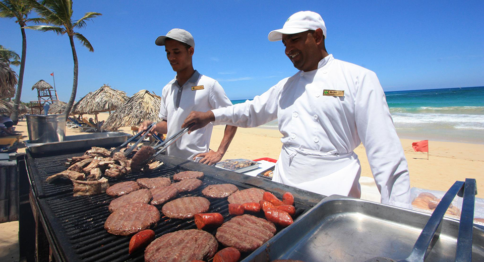
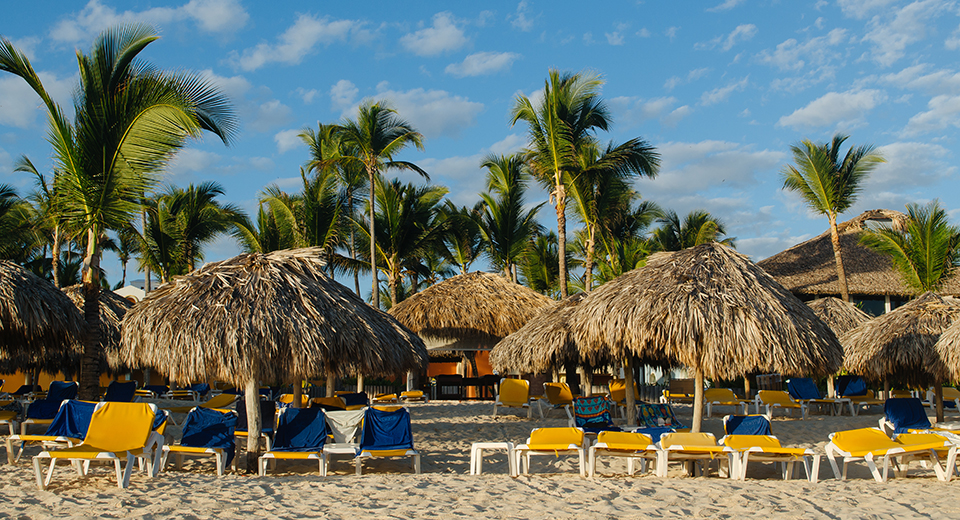
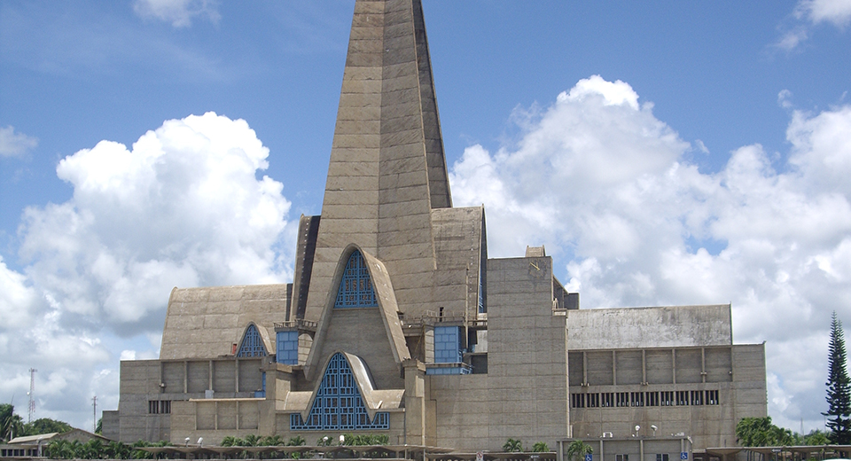
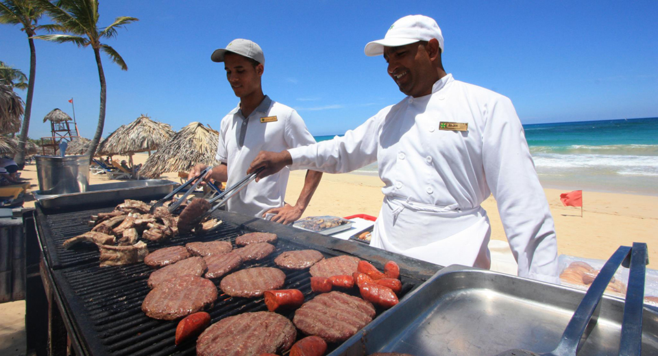
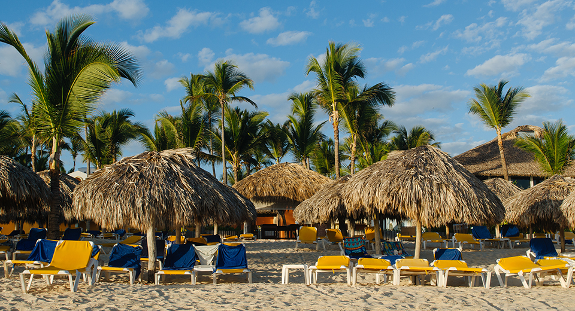
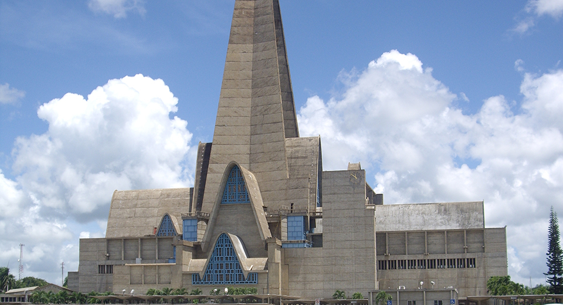

November 13, 2018
Vacation in Punta Cana
 





30 miles of sandy beaches, sunny skies, good food, and great culture. Sounds too good to be true? Think again. You can find all of this and more in Punta Cana. Experience tropical Carribbean living whether you stay at one of Punta Cana's extensive array of all inclusive resorts and boutique hideaways or rent a beachside condo or villa. There's activites for everyone to enjoy throughout their stay. Foodies can indulge in fine dining or get a taste of traditional Dominican cuisine. Adventurers can choose from ziplining, ATV riding, and multiple water sports. For those tourists looking to relax, there are plenty of secluded beaches boasting seaside lounge chairs and serene spas. Punta Cana is also home to 10 golf courses, shopping malls, marinas, and churches, museums, and other cultural sites.
Search...